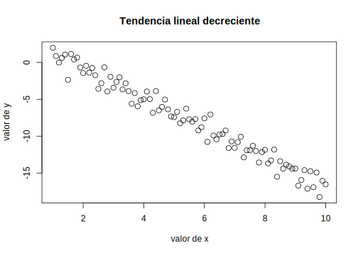

Capítulo 1 Materiales y herramientas
1.1 Materiales
A lo largo del manual se usan datos para ejemplificar procedimientos. Algunos de ellos son ficticios y han sido construidos especialmente para ilustrar algún aspecto de una distribución o del resultado de una técnica. Sin embargo, la mayoría de los ejemplos están realizados a partir de datos reales, provenientes de bases de datos de libre disponibilidad que hemos elegido teniendo en cuenta los intereses de los púbicos a que nos dirigimos. Estas bases son las que se presentan a continuación, en el repositorio () se encuentra una descripción más detallada, así como los cuestionarios, las bases de datos correspondientes y los manuales de códigos para poner en correspondencia los nombres de las variables dados en la base, con los aspectos que se indagan de las unidades (hogares o personas).
1.1.1 Encuesta Permanente de Hogares (eph.3.18)
La EPH es un programa nacional de producción permanente de indicadores sociales cuyo objetivo es conocer las características socioeconómicas de la población. Es realizada en forma conjunta por el Instituto Nacional de Estadística y Censos (INDEC) y las Direcciones Provinciales de EstadÌstica (DPE) ((???)). Los datos se recogen por medio de dos cuestionarios; uno de ellos que pregunta por características del hogar y la vivienda y el otro por las personas individualmente.
1.1.2 Encuesta Nacional de Factores de Riesgo (ENFR2013)
La tercera ENFR es un estudio de corte transversal que permite vigilar la prevalencia de factores de riesgo de enfermedades no transmisibles y evaluar su evolución en comparación con las ediciones anteriores realizadas en los años 2005 y 2009. Es realizada conjuntamente entre el Instituto Nacional de Estadística y Censos (INDEC) y el Ministerio de Salud de la Nación de la República Argentina.
La encuesta tiene por objetivos: Conocer la distribución de los factores de riesgo en la población de 18 años y más. Estimar su prevalencia. Determinar el perfil de la población bajo riesgo a través de sus características sociodemográficas, socioeconómicas, educativas y del entorno familiar social (???), (???)
1.1.3 Latinobarómetro (latinob2017)
Latinobarómetro es un estudio de opinión pública que aplica anualmente alrededor de 20.000 entrevistas en 18 países de América Latina representando a más de 600 millones de habitantes.
Corporación Latinobarómetro es una ONG sin fines de lucro con sede en Santiago de Chile, única responsable de la producción y publicación de los datos.
La Corporación Latinobarómetro investiga el desarrollo de la democracia, la economía y la sociedad en su conjunto, usando indicadores de opinión pública que miden actitudes, valores y comportamientos. Los resultados son utilizados por los actores socio políticos de la región, actores internacionales, gubernamentales y medios de comunicación. Cita en http://www.latinobarometro.org/lat.jsp
1.1.4 Encuesta Nacional sobre Prevalencias de Consumo de Sustancias Psicoactivas (ENPreCoSP2011)
La encuesta produce datos sobre:
• La cantidad de personas que declararon haber consumido sustancias psicoactivas en diferentes períodos de referencia (prevalencias) y su incidencia en relación con la población total. Las sustancias psicoactivas comprenden: las drogas legales o sociales (tabaco, bebidas alcohólicas), ilegales (marihuana, cocaína, pasta base, éxtasis, opiáceos y anestésicos, crack, alucinógenos, inhalables y otras drogas) y fármacos (estimulantes, tranquilizantes, anorexígenos);
• Las características sociodemográficas, socioeconómicas, educativas y del entorno familiar social de la población de 16 a 65 años de edad que consume sustancias psicoactivas.
El objetivo general de esta Encuesta fue contribuir a actualizar el sistema de información sobre el consumo de sustancias psicoactivas a nivel nacional y, de esa manera, al diseño de políticas públicas más eficaces, orientadas a mejorar las condiciones de salud de la población.
1.1.5 Aplicación de la escala de Bayley
La base provista contienen 454 casos de niños evaluados en las subescalas mental y motora de la escala de Bayley.
La Escala Bayley de Desarrollo Infantil se aplica en niños de los 2 a los 36 meses de vida y ha sido adaptada a Córdoba en niños de 0 a 24 meses (Faas y colaboradores, 2005, 2006). Los dos primeros años de vida de un niño son momentos cruciales para inferir de manera temprana el estado de evolución de su desarrollo posterior (Papalia, 2000).
La prueba, de origen norteamericano, consta de varias versiones desde su creación por su autora Nancy Bayley en 1933, habiendo sido revisada en 1969, en 1977 y en 1993.
Las escalas de Bayley (EBDI) fueron publicadas en el año 1969. En España aparecieron estandarizadas en el año1977, y la revisión americana (las Bayley Scale of Infant Development-II o BSID II) fueron publicadas en 1993. El interés por disponer de unas escalas adecuadamente tipificadas como las Bayley creció a lo largo de la primera mitad del siglo XX, al ir aumentando el conocimiento de las capacidades infantiles, los cambios cerebrales durante la etapa posnatal y el estudio de cómo influyen los factores del medio, la familia y los individuos en el desarrollo temprano. Además, la proporción de niños prematuros ha ido aumentando considerablemente a lo largo de los años, con el consiguiente aumento de casos que nacen con el riesgo de presentar un retraso en el desarrollo.
El objetivo inicial de las escalas fue medir la inteligencia a edades muy tempranas. Los ítems que la componen están ordenados en una secuencia de dificultades que aumentan con la edad. En su forma actual, la EBDI permite medir el desarrollo mental, el desarrollo psicomotor y el comportamiento infantil.
El nivel de desarrollo mental tiene 163 ítems que miden el desarrollo por medio de una serie de habilidades. El nivel del desarrollo motor se compone de 81 ítems que representan tanto habilidades motoras finas como gruesas, y se centra principalmente en el grado de control del cuerpo y la coordinación de los movimientos. La distinción entre la escala mental y motora se justifica porque se parte de que la preplanificación y el razonamiento son componentes de las actividades mentales, pero no de las habilidades motoras. Por tanto, los ítems de las dos escalas son distintos, aunque en algunas ocasiones una misma habilidad este incluida en ambas escalas. El registro comportamental del niño complementa la información obtenida mediante las escalas mental y motora, proporciona una descripción del comportamiento infantil relativo al que se esperaría de cualquier niño que estuviera en el mismo estadio.
Se dice que la escala de Bayley es una escala ecléctica, es decir los ítems no están agrupados por áreas, factores o subescalas con puntuaciones determinadas para cada una de ellas. No obstante, las Bayley II intenta incluir ítems de las cinco áreas que la guía americana para la evaluación de los candidatos de servicios especiales requiere que sean evaluadas: desarrollo físico, cognitivo, lingüístico, psicosocial y autoayuda. Sin embargo continúa sin haber medidas para cada una de estas áreas calificadas.
Como se menciono anteriormente en 1993 se publicó una revisión de las escalas originales. Las Bayley II mantienen la misma estructura y objetivos que la anterior, pero introducen algunos cambios como resultado de los trabajos de investigación sobre el desarrollo del niño en los últimos años y para mejorar la adecuación de los datos y el material a la población infantil. Uno de los cambios importantes es que se amplía la edad de evaluación desde el 1º mes hasta los 42 meses. Además se han incorporado ítems cuyo estudio han demostrado tener una adecuada fiabilidad y validez; así los 163 ítems de la escala mental y los 81 de la escala motora de Bayley han pasado a ser 178 y 111 respectivamente en las Bayley II.
Actualmente se utiliza la versión correspondiente a 1993. Como su autora lo indica, el objetivo principal de esta prueba es diagnosticar demoras del desarrollo y planificar estrategias de intervención. Actualmente puede decirse que esta Escala constituye uno de los test más utilizados para evaluar el desarrollo neuroconductual durante los primeros meses de vida (Mayes et al., 1995), sin embargo es poco utilizada como herramienta de diagnóstico en nuestro medio. La misma está formada por tres Sub-Escalas:
Escala Mental: Evalúa memoria, habituación, resolución de problemas, conceptualización numérica temprana, generalización, clasificación, vocalizaciones, lenguaje y habilidades sociales. Es decir estima aspectos relacionados con el desarrollo cognitivo y la capacidad de comunicación.
Escala Motora: Evalúa el control de los músculos gruesos y finos del cuerpo. Esto incluye movimientos asociados con rodar, girar, encogerse y estirarse, sentarse, pararse, caminar, correr y saltar. Se evalúa también la manipulación motora fina implicada en la prensión, adecuado uso de elementos de escritura e imitación de movimientos de las manos. En definitiva, evalúa el grado de coordinación corporal, así como habilidades motrices finas en manos y dedos.
Escala Comportamental: Evalúa aspectos cualitativos de la situación de examen como atención/alerta, orientación/interacción hacia la tarea, examinador y cuidador, regulación emocional y calidad del movimiento. De este modo permite analizar la naturaleza de las orientaciones sociales y objetivas hacia el entorno. La información de esta escala debe utilizarse para suplementar la información cuantitativa de las dos escalas anteriores.
El desarrollo infantil implica un proceso de continuos cambios, en el cual el niño va a experimentar diversas trasformaciones y progresos. Estos cambios no sólo se advierten en el plano motor e intelectual (esto es, en su capacidad para dominar movimientos y razonar), sino que además se pueden apreciar múltiples reorganizaciones en el plano emocional (su capacidad para sentir) y social (su capacidad para relacionarse con los demás). La adquisición de estas competencias variará en función de la madurez neurofisiológica, de las características individuales, y de la riqueza y calidad de los estímulos de su entorno. De allí, la importancia de este período para el niño, pues sentará la base para su desarrollo y crecimiento óptimo.
La escala asigna puntajes brutos en función de la cantidad de pruebas exitosamente pasadas para una determinada edad. Posteriormente, estos puntajes brutos son transformados en índices mentales o motores que permiten ubicar al niño en un nivel de desarrollo normal, levemente retrasado, significativamente retrasado o, si supera el normal, acelerado, para su edad. Cada índice de desarrollo mental (IDM) y motor (IDP), tiene una distribución con una media de 100 y una desviación estándar de 15. Un puntaje de 100 o más en cualquier escala indica el nivel promedio de performance de un niño en una edad dada. Puntajes de 85 y 115 corresponden a 1 DS por debajo y por encima de la media y puntajes de 70 y 130 a 2 DS. En una distribución normal 2/3 de los niños obtienen puntajes entre 85 y 115, 95% entre 70 y 130 y casi todos (99,9%) entre 55 y 145 (3 DS a cada lado de la media).
1.1.6 Adultos mayores
Ver si andrès tiene algo
1.2 Herramientas
1.2.1 La elección de R
Para realizar análisis de datos existen numerosos programas informáticos, que se ocupan de los procesos computacionales, de manera que el usuario solo deba decidir qué procedimiento aplicar, cuidar que se cumplan las condiciones que hacen válido al procedimiento (los supuestos) y realizar una lectura correcta y completa del resultado que se obtiene, sin involucrarse con las operaciones de cálculo. Estos programas o “paquetes estadísticos” reúnen en un entorno único las operaciones más frecuentemente usadas por investigadores y analistas de datos y las ponen al alcance del usuario no especializado. Algunos de uso muy común son SPSS, SAS, INFOSTAT, STATA, STATISTICAL, etc. De la larga lista de opciones disponibles, este manual usa un software que se llama R, elección que se fundamenta en que R es varias cosas al mismo tiempo:
Es un software para análisis de datos: lo usan estadísticos y analistas de datos para extraer significado de información cuantitativa, descripciones e inferencias, visualización de datos y modelización predictiva.
Es un lenguaje de programación orientado a objetos, diseñado por estadísticos y para el uso de estadísticos: el análisis se hace escribiendo sentencias en este lenguaje, que provee objetos, operadores y funciones que hacen muy intuitivo el proceso de explorar, modelar y visualizar datos.
Es un ambiente para el análisis estadístico: en R hay funciones para prácticamente todo tipo de transformación de datos, de modelización y de representaciones gráficas que pueden hacer falta.
Es un proyecto de código abierto: esto significa no solo que se lo puede descargar y usar gratis, sino que el código es abierto y cualquiera puede inspeccionar o modificar las rutinas. Como sucede con otros proyectos de código abierto, como Linux, R ha mejorado sus códigos tras varios años de “muchos ojos mirando” y aportando soluciones. También como otros proyectos de código abierto, R tiene interfaces abiertas, por lo que se integra fácilmente a otras aplicaciones y sistemas.
Es una comunidad: R fue inicialmente desarrollado por Robert Gentleman y Ross Ithaka , del Departamento de Estadística de la Universidad de Auckland, en 1993 y desde entonces el grupo que dirige el proyecto ha crecido y se ha difundido por el mundo. Además, miles de otras personas han contribuido con funcionalidades adicionales por medio del aporte de “paquetes” que utilizan los 2 millones de usuarios de todo el mundo. Como resultado, existe una intensa comunidad de usuarios de R on-line, con muchos sitios que ofrecen recursos para principiantes y para expertos. A esa comunidad se puede recurrir para consultas y para salvar dificultades, son muy activas y dispuestas a ayudar.
R integra programas llamados paquetes, que sirven para realizar análisis específicos. Los paquetes son rutinas que realizan conjuntos de operaciones especializadas, y una de las potencialidades de R es que diferentes investigadores pueden desarrollar paquetes para determinados tipos de análisis y ponerlos a disposición de los demás usuarios. En la actualidad hay más de 7000 paquetes y el conjunto crece porque la comunidad R es muy activa y continuamente se hacen aportes.
Actualmente, los principales medios de comunicación usan R para expresar datos de manera gráfica.
No solo cuenta con los métodos estándar sino que, debido a que los principales avances en procedimientos estadísticos se realizan en R, las técnicas más actualizadas están usualmente primero disponibles en R, a los desarrolladores de paquetes comerciales les lleva más tiempo poner las actualizaciones al alcance de los usuarios. Y los usuarios a menudo deben pagar por las actualizaciones.
Permite la reproducción de los análisis por parte de cualquiera que conozca el código que se aplicó, por lo que aporta una herramienta necesaria en los proyectos de ciencia abierta, en especial para la reproducibilidad de los resultados.
Hay sitios web (como https://rdrr.io/snippets/, por ejemplo) que permiten ejecutar líneas de código on line, para situaciones en que no se cuenta con R instalado.
Por estas razones, R es uno de los lenguajes de programación que más uso tiene y se está convirtiendo en la lingua franca del análisis de datos
Como lenguaje, R tiene varias interfaces gráficas, que el modo en que un humano puede interactuar con él. R es el motor y del mismo modo en que, para manejar un auto no hace falta saber cómo funciona el motor, también aquí será suficiente contar con un buen conjunto de comandos (volante, pedales…) para hacer uso de la potencia de ese motor. De las interfaces existentes, hemos elegido RStudio que es un entorno de desarrollo integrado (IDE) de R para facilitar la edición de código que ofrece diversas herramientas para hacer muy accesible el uso de R por parte de quienes no se dedican a la programación, sino que son usuarios de procedimientos estadísticos.
1.2.2 Instalación de R y RStudio
En http://cran.r-project.org “Download R for [Linux, Mac o Windows]”, y luego “install R for the first time”. Una vez descargado, se instala siguiendo las instrucciones de las pantallas, aceptando las opciones por defecto que se ofrecen.
Una vez que R está instalado, se debe sumar RStudio. El lugar de descarga es http://www.rstudio.com/products/rstudio/download/, Allí se elige la version gratis (free version) de RStudio Desktop y se baja hasta encontrar el sistema operativo y la version que corresponda a nuestro equipo. Luego se ejecuta el instalador de RStudio y se eligen las opciones por defecto. Cuando esté ya instalado, se accede por medio de RStudio; si al instalar R se creó un acceso directo a R en el escritorio, se lo puede eliminar. Al abrir RStudio, R es detectado automáticamente y desde allí operaremos.
1.2.3 Los componentes de RStudio
Cuando abrimos RStudio, vamos a encontrar tres paneles, uno a la izquierda, más grande, y dos a la derecha. En “file” se solicita un nuevo script, que se abre a la izquierda y ahora quedan cuatro paneles:

Los cuatro paneles de RStudio
Superior izquierdo es el script que se acaba de abrir, un documento editable en el que se escriben los comandos.
Inferior izquierdo es la consola, donde se encuentra la ejecución de los comandos y, si corresponde, los resultados de operaciones solicitadas.
Superior derecho es el entorno de trabajo, allí aparece cada uno de los objetos que se crean durante la sesión.
Inferior derecho, cuatro pestañas con los directorios de trabajo, los paquetes instalados, la ayuda (cuando se pide), los gráficos que se hagan.
1.2.4 Operaciones en el script
El script es un editor de textos en que se escriben comandos y se ejecutan, ya sea con el botón “run” o con una combinación de teclas que, según la configuración puede ser Ctrl+R o Ctrl+Enter. Los elementos que maneja R son objetos: un número, un vector, una base de datos, una tabla y muchos otros. Inicialmente, los que interesan a fin del análisis de datos son: vectores y matrices de datos. Un objeto numérico puede ser una contante, si definimos a x como el valor 3
En el panel superior derecho aparece este objeto. El signo <- que define el objeto es equivalente a = que da la idea de asignar a x el valor 3. Si se lo evoca, muestra su valor
## [1] 3Este objeto es un número, lo que puede saberse si se pregunta de qué clase es este objeto:
## [1] "numeric"Es numérico.
Si hubiésemos definido el objeto:
## [1] "character"Es carácter, para que lo acepte, se debe poner entre comillas. Esta cualidad se puede usar cuando los números codifican categorías, como cuando se una 1 para varones y 2 para mujeres
## [1] "character"Allí se entiende al número como un código.
Otros tipos de objeto son lógicos
## [1] "logical"Es lógico, esta clase de objeto puede tomar dos valores TRUE y FALSE.
Es posible transformar una clase de objeto en otra. Por ejemplo, si un valor numérico fue cargado como carácter, como el caso de u en el ejemplo anterior, se lo vuelve numérico pidiendo:
## [1] "numeric"Pero si intentáramos eso con t, el resultado falla, porque no se interpreta un valor numérico.
Si el objeto es un número, se puede operar simplemente con él
## [1] 15Aquí no se creó ningún objeto nuevo, solo se hizo la operación y se mostró el resultado. Para crearlo, hace falta ponerle nombre:
Y no veremos su valor hasta que no lo solicitemos
## [1] 15Suma resta, multiplicación y división se hacen con los signos que conocemos, para elevar a una potencia se usa ^, para hacer dos a la tercera potencia, es:
## [1] 8O x a la quinta potencia:
## [1] 243Las raíces son potencias fraccionarias, por lo que puede conseguirse la raíz cuadrada de x así:
## [1] 1.732051Como se usa a menudo, hay una función de biblioteca para eso:
## [1] 1.732051El conjunto de valores que asume una variable es un objeto que se llama vector. Se lo genera con una letra c y paréntesis que indica concatenar valores.
Ejemplo: Los valores de PBI de cinco países son 10000, 3000, 7000, 4000 y 15000, se los puede concatenar así, definiendo el vector que los contiene:
Y se pueden hacer operaciones con él, por ejemplo, sumar sus valores
## [1] 39000O sumarlos y dividir por 5, que va a dar el promedio:
## [1] 7800Pero veremos luego que para esto hay una función de biblioteca que calcula la media (promedio) directamente
## [1] 7800Una concatenación de varios vectores de la misma longitud, constituye una data frame, una matriz de datos. Será la materia prima del trabajo que realizaremos a continuación.
Para ver un ejemplo de gráfico básico, puede copiar y pegar el código que está más abajo en su script. Allí se define a \(x\) como una secuencia de números que va de 1 a 10 en intervalos de 0.1. Luego se define \(y\) como una función lineal de \(x\) (\(y=3-2*x\)). El tercer comando indica que se grafiquen las dos variables y les pone nombre a los ejes y al título del gráfico.
x <- seq(1, 10, .1)
y <- 3 - 2 * x
plot(x, y,
xlab = "valor de x", ylab = "valor de y",
main = "Función lineal decreciente"
)
1.2.5 Instalación de paquetes
Cuando se descarga R y RStudio se cuenta con el sistema básico del lenguaje R. Las operaciones mencionadas en el apartado anterior y otras, están disponibles en esa base. Sin embargo, una gran cantidad de procedimientos están programados y ofrecidos como “paquetes”, que sirven para tareas específicas. Su creación y desarrollo es parte de la potencialidad de R, porque son aportes de la comunidad que los diseña y los ofrece continuamente. En la actualidad hay más de 10000 paquetes en la CRAN (Comprehensive R Archive Network) aplicables a una gran diversidad de procedimientos.
La instalación de paquetes de R puede hacerse desde la línea de comando con install.packages("") y el nombre del paquete.
A lo largo del curso y en la medida que sea necesario, se cargarán paquetes específicos.